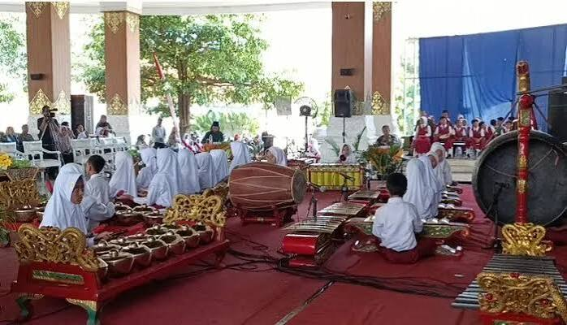

Seni daerah Karanganyar tidak pernah lahir dari panggung megah. Ia tumbuh dari kehidupan sehari-hari masyarakat — dari suara kentongan yang mengawali pagi di dusun, karawitan yang dimainkan dalam acara pernikahan dan khitanan, hingga pertunjukan reog yang menghibur warga di malam festival. Ini adalah seni yang tidak pernah terpisah dari hidup yang dijalaninya.
Karawitan: Suara yang Menyatukan
Karawitan adalah musik gamelan yang menjadi tulang punggung kesenian Jawa. Di Karanganyar, kelompok-kelompok karawitan desa masih aktif berlatih setiap minggu, mengiringi berbagai upacara adat dan pertunjukan wayang. Suaranya yang khas — perpaduan antara gender, gong, dan saron — menjadi latar keseharian yang tidak tergantikan.
"Dalam karawitan, tidak ada yang bermain sendiri. Semua harus saling mendengar, saling menyesuaikan. Itulah filosofi hidup bersama."
Fakta Menarik
- Karawitan di Karanganyar memiliki ciri khas gaya Surakarta yang membedakannya dari wilayah lain di Jawa
- Banyak kesenian daerah di sini melibatkan seluruh keluarga lintas generasi dalam satu kelompok penampil

Mengapa Penting?
Bermain karawitan mengajarkan disiplin, kesabaran, kerja sama, dan saling menghargai karena setiap pemain memiliki peran yang harus selaras.